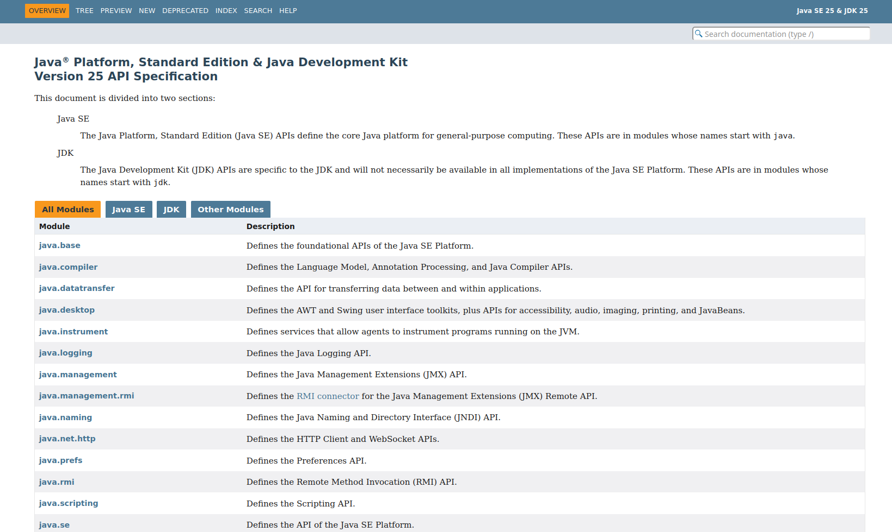

El llenguatge de programació Java
Java és un llenguatge de programació orientat a objectes desenvolupat per Sun Microsystems a principis dels anys 90. El seu creador, James Gosling, el va batejar com a Oak.
A continuació, es mostren les versions de Java, juntament amb la seua data de llançament, actualment amb suport:
- Java SE 8 (LTS): Març de 2014. Suport especial.
- Java SE 11 (LTS): Setembre de 2018. Suport especial.
- Java SE 17 (LTS): Setembre de 2021. Suport especial.
- Java SE 21 (LTS): Setembre de 2023.
- Java SE 25 (LTS): Setembre de 2025.
Què necessite per a programar en Java?
Necessitem:
El JDK (Java Development Kit o Kit de Desenvolupament en Java). És el programari que ens permet crear aplicacions Java de diferents tipus. És el primer que hem de tindre instal·lat al nostre ordinador. El JDK inclou:
-
El JRE (Java Runtime Environment). És la màquina virtual de Java que tradueix el bytecode a codi executable.
-
El compilador de Java. És l'encarregat de convertir el nostre codi font a bytecode.
-
API de Java (Application Programming Interface). Conté tots els paquets, classes i interfícies del llenguatge Java. És el codi que proporciona Java perquè el programador desenvolupe les seues pròpies aplicacions.
L'entorn JDK funciona única i exclusivament mitjançant ordres de consola:
-
javac: És l'ordre compiladora de Java. La seua sintaxi és:
javac Exemple.javaL'entrada d'aquesta ordre ha de ser necessàriament un fitxer que continga codi escrit en llenguatge Java i amb extensió .java. L'ordre ens crearà un fitxer .class per cada classe que continga el fitxer Java. Els fitxers .class contenen codi bytecode, el codi que és interpretat per la màquina virtual. -
java: És l'intèrpret de Java. Permet executar aplicacions que prèviament hagen sigut compilades i transformades en fitxers .class. La seua sintaxi és:
java ExempleNo cal ací subministrar l'extensió del fitxer, ja que sempre ha de ser un fitxer .class.
Des de la versió 11, el JDK permet executar un fitxer de codi font directament amb l'ordre java, sense necessitat d'utilitzar javac prèviament.
La seua sintaxi és: java Exemple.java (nota que ací sí que s'inclou l'extensió .java)
Quan ho fem així, el JDK compila l'arxiu directament en la memòria principal i l'executa sobre la marxa. L'avantatge principal és que no es genera cap fitxer .class al disc, la qual cosa ho fa ideal per a provar xicotets scripts o fer proves ràpides sense embrutar el directori de treball.
JShell: Proves ràpides interactives (REPL)
A partir de Java 9, el JDK inclou una eina interactiva de línia d'ordres anomenada JShell. És el que en programació es coneix com un entorn REPL (Read-Eval-Print Loop).
JShell permet escriure i executar fragments de codi Java (declarar variables, fer operacions matemàtiques, provar mètodes) immediatament, sense necessitat de crear una classe, escriure el mètode main ni compilar cap arxiu. És l'eina perfecta per a experimentar o resoldre dubtes ràpids de sintaxi mentre aprens.
Per a utilitzar-lo, només cal obrir la consola o terminal i escriure l'ordre jshell:
$ jshell
| Welcome to JShell -- Version 25
jshell> int a = 10;
a ==> 10
jshell> IO.println("La meitat és " + (a / 2));
La meitat és 5
jshell> /exit
| Goodbye
Dins de JShell, pots escriure codi Java normal. No obstant això, l'eina té les seues pròpies ordres de control que sempre comencen per una barra inclinada (/). Per exemple, /exit s'utilitza per a tancar el programa, i /vars et mostra una llista de totes les variables que has creat durant la sessió.
Documentació: API de Java.
A https://docs.oracle.com/en/java/index.html es troba la documentació oficial de Java. La més interessant és la documentació de l'API de Java. El següent enllaç correspon a l'API de la Java SE (JDK 25 LTS):
https://docs.oracle.com/en/java/javase/25/docs/api/index.html

Entorns de desenvolupament per a Java
El kit de desenvolupament bàsic proporcionat per Oracle és el mínim que es necessita per a desenvolupar un programa en Java. És útil si es necessita compilar aplicacions Java de manera esporàdica.
No obstant això, l'escriptura i compilació de programes feta d'aquesta forma és un poc incòmoda. Per això, nombroses empreses fabriquen els seus propis entorns d'edició, algunes inclouen el compilador i altres utilitzen el mateix JDK d'Oracle. Alguns avantatges que oferixen són:
- Facilitats per a escriure codi.
- Facilitats de depuració.
- Facilitat de configuració del sistema.
- Facilitats per a organitzar els arxius de codi.
- Facilitat per a exportar i importar projectes.
L'entorn de desenvolupament per a Java que utilitzarem en el mòdul serà: IntelliJ IDEA. Aquest entorn està creat per la companyia JetBrains.